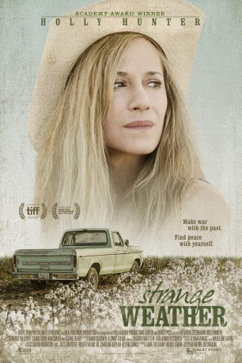

#7389 Strange Weather
 
 IMDB-Wertung: 5.6 / 10
IMDB-Wertung: 5.6 / 10  Metascore: 0
Metascore: 0 
Darcy Baylor hat ihren Sohn verloren und ist am Boden zerstört. In einem Versuch, seinen Verlust zu überwinden oder zumindest damit umzugehen, forscht sie nach den genauen Ursachen. Als ihre Nachbarin ihr erzählt, dass ein ehemaliger Freund ihres Sohnes Besitzer einer Fast-Food-Kette ist, wird Darcy misstrauisch. Das Geschäftsmodell kommt ihr bekannt vor - ihr Sohn stellte es ihr kurz vor seinem Tod vor. Kurzerhand begeben sich die beiden Frauen auf einen Roadtrip in den Süden. Dort gräbt Darcy tiefer in der Vergangenheit und findet heraus, dass die Umstände zum Tod ihres Sohnes eine Menge Kokain beinhalten.
Jahr: 2016
Dauer: 91 Minuten
FSK:
Land: USA Studio: Brainstorm MediaTonspuren: DD5.1 - ,
Untertitel: Deutsch, Englisch,
Auflösung: 1080p (1920x1080) Größe: 3665 MB
Genre: Drama, Abenteuer
Regisseur: Katherine Dieckmann
Drehbuch: Jeremy Catalino
Soundtrack:
Darsteller:
 Holly Hunter als Darcy Baylor
Holly Hunter als Darcy Baylor- Carrie Coon als Byrd Ritt
- Ransom Ashley als Walker Baylor
- Walker Babington als Dennis
- Craig Boe als Buford LaPierre
 Kim Coates als Clayton Watson
Kim Coates als Clayton Watson Kim Collins als Guy 1
Kim Collins als Guy 1- Turner Crumbley als Kevin Jenkins
- Lucy Faust als Cheryl Perkins
 Ted Ferguson als Sam
Ted Ferguson als Sam- Susan Gallagher als Sue Ann Jenkins
- Choppy Guillotte als Professor Jeremy Collins
- Glenne Headly als Mary Lou Healy
- Shane Jacobsen als Mark Wright
- Fred Jennings als Man On The Street
- Johnny McPhail als Wes Sanford
 Ritchie Montgomery als Officer Monroe
Ritchie Montgomery als Officer Monroe- Emily Peachey als Dawg House Receptionist
- Allene Quincy als June
- Michael Randall als Police Officer
- Andrene Ward-Hammond als Geri
- Cotton Yancey als Old Man , uncredited
- Gloria Gonnillini als Lady at shelter
- Bobby Loyd als Woman in Church Parking Lot
- Stacy Nicole Peoples als Beth Jenkins
- John Read als Guy #2
Datei: X:\2016(N-Z)\Strange Weather (2016, FSK, 1920x1080).mkv seit 08.11.2017
Festplatte: HD 2016(A-Z)
 Es gibt insgesamt 182 Filme in der Gruppe '2016(N-Z)'
Es gibt insgesamt 182 Filme in der Gruppe '2016(N-Z)'